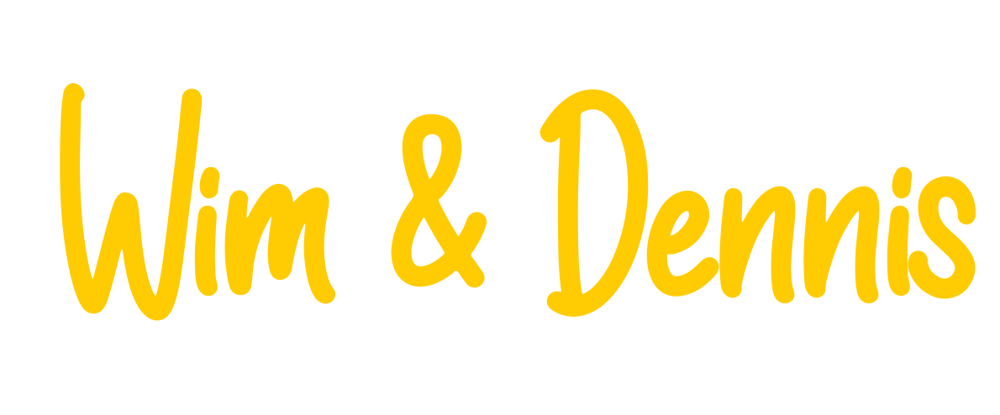
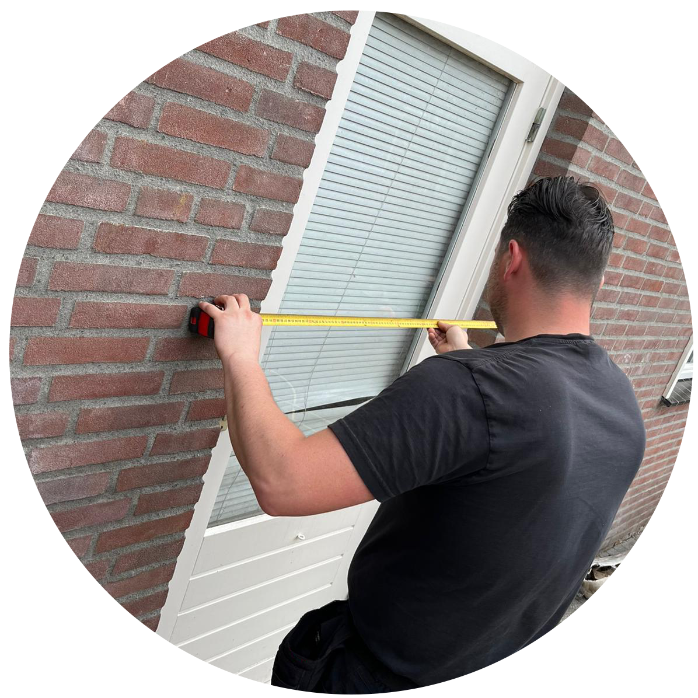

Een familiebedrijf uit Oss dat rolluiken, screens en zonwering op maat maakt én vakkundig monteert. Maak kennis met de mensen achter Lucky Zonwering.
Lucky Zonwering is een echt familiebedrijf uit Oss, opgericht in 1975. Wat begon als een lokale specialist in rolluiken en zonwering, groeide uit tot een vertrouwd adres voor duizenden particulieren en bedrijven in heel Noord-Brabant. De eigenaren staan nog altijd zelf op de steiger — van het eerste advies tot de montage en de nazorg. Dat persoonlijke, betrokken karakter is precies waarom klanten al bijna vijftig jaar voor Lucky kiezen.
Bij Lucky heeft u te maken met mensen, niet met een callcenter. Eigenaren Wim en Dennis staan zelf op de steiger en kennen elk project van begin tot eind. Korte lijnen, eerlijk advies en afspraken die we nakomen — dat is waar wij al sinds 1975 voor staan.

Wim & Dennis — eigenaren Lucky Zonwering

Geen verkoper op afstand, maar een vakman bij u thuis. Wij meten gratis en vrijblijvend bij u in, adviseren eerlijk over type, kleur en bediening, en monteren alles met onze eigen mensen. Eén vast aanspreekpunt, van het eerste bezoek tot de nazorg.

Sinds 1992 maken wij onze rolluiken in eigen productie. Elk rolluik wordt met de hand in elkaar gezet, gecontroleerd en getest vóór levering. Dankzij die eigen werkplaats in Oss leveren we scherpe prijzen, korte levertijden en echt maatwerk — én hebben we vrijwel altijd onderdelen op voorraad voor een snelle reparatie.

Van rolluiken en screens tot terrasoverkappingen, veranda's en pergola's: bij Lucky vindt u alles voor comfortabel wonen en genieten, binnen én buiten. Eén partij voor advies, levering, montage en service — zo weet u altijd waar u aan toe bent.

Bij Lucky Zonwering vindt u de complete oplossing onder één dak:
Wij luisteren naar uw wensen, meten gratis en vrijblijvend bij u in en adviseren eerlijk over kleur, bediening en het beste type zonwering voor uw woning. Benieuwd naar een richtprijs? Stel online uw zonwering op maat samen.
Vanuit onze vestiging aan de Ussenstraat in Oss zijn onze monteurs dagelijks actief in de hele regio. Daardoor kunnen we meestal snel inmeten én plaatsen, met persoonlijk contact van begin tot eind.
Lees ook waarom klanten voor Lucky kiezen of vraag direct een gratis offerte aan.
Lucky Zonwering is in 1975 opgericht en is daarmee al bijna vijftig jaar de vertrouwde zonweringspecialist van Oss en Noord-Brabant. Sinds 1992 maken wij onze rolluiken in eigen productie.
Ja, Lucky Zonwering is een echt familiebedrijf uit Oss. De eigenaren staan zelf op de steiger, van het eerste advies tot de montage en de nazorg.
Wij leveren en monteren rolluiken, screens en terraszonwering, knikarm- en uitvalschermen, markiezen en luifels, terrasoverkappingen, veranda's en pergola's, horren en binnenzonwering zoals houten jaloezieën.
Lucky Zonwering is gevestigd aan de Ussenstraat 26A in Oss en is van daaruit dagelijks actief in heel Noord-Brabant.